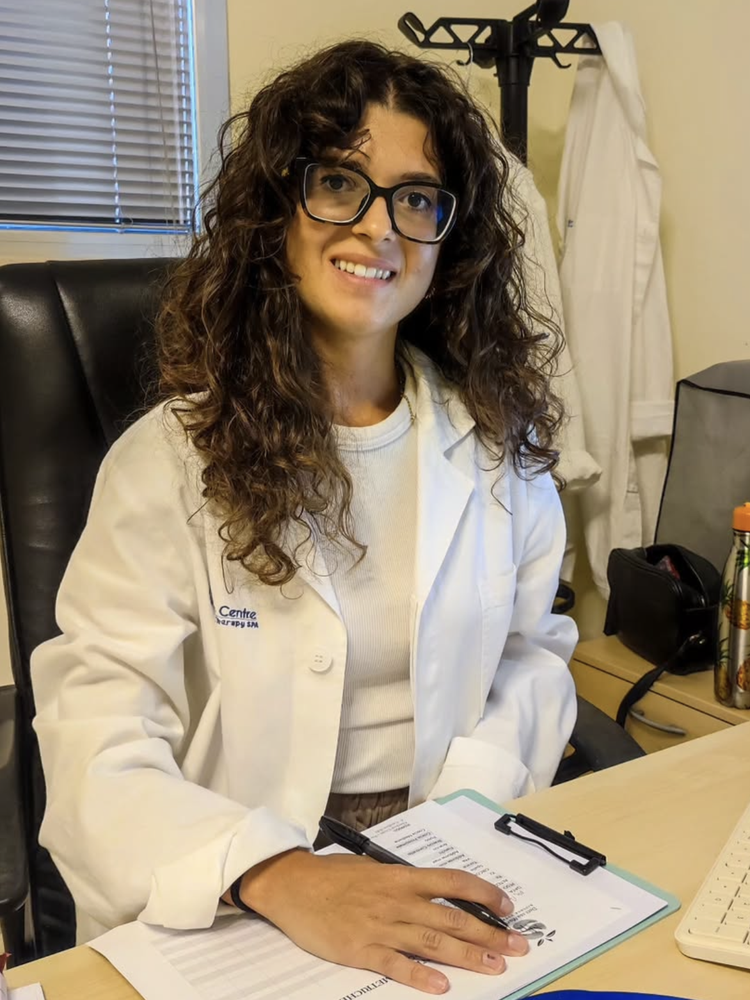

Piani nutrizionali personalizzati per ritrovare un rapporto sano con il cibo — senza privazioni, senza sensi di colpa, costruiti intorno alla tua vita reale.

Sono una biologa nutrizionista e credo che la nutrizione debba unire scienza, ascolto ed empatia. Non esiste la dieta uguale per tutti: ogni piano che costruisco parte dalla tua storia, dalle tue abitudini e dagli obiettivi che vuoi raggiungere.
Ho alle spalle anni di ricerca microbiologica su microbiota e probiotici — una base scientifica che porto ogni giorno nel lavoro clinico con i miei pazienti. Ho pubblicato due studi peer-reviewed sulla salute gastrointestinale e metabolica.
Ricevo a Lecce e a Cavallino, e sono disponibile anche online per chi si trova in qualsiasi parte d'Italia.
Ogni percorso è costruito sulle tue esigenze, il tuo stile di vita e i tuoi obiettivi.
Una chiamata conoscitiva per capire le tue esigenze e scoprire come posso aiutarti. Nessun impegno, solo una chiacchierata.
Anamnesi approfondita, valutazione della composizione corporea e piano nutrizionale personalizzato su misura per te.
Monitoraggio dei progressi, aggiustamento del piano alimentare e supporto motivazionale lungo il percorso.
Analisi precisa della composizione corporea: massa grassa, massa magra, acqua corporea e metabolismo basale.
Tutto il supporto di una prima visita o di un controllo, comodamente da casa tua via videochiamata.
Per chi preferisce ricevere la consulenza comodamente a casa propria. Disponibile nell'area di Lecce e provincia.
Dalla nutrizione di base alla clinica specialistica: un supporto professionale per ogni esigenza.
Piani alimentari per ottimizzare la performance e il recupero atletico.
Gestione nutrizionale di diabete, colesterolo, patologie tiroidee, celiachia, IBS e GERD.
Approccio scientifico alla salute intestinale, probiotici e disturbi digestivi.
Nutrizione specifica per insulino-resistenza, PCOS, endometriosi e squilibri ormonali.
Percorsi sostenibili di dimagrimento senza privazioni, con risultati duraturi nel tempo.
Consulenze nutrizionali anche per bambini e adolescenti in fase di crescita.
Due studi in provincia di Lecce e disponibilità in videoconsulto per tutta Italia.
Studio multidisciplinare nel cuore di Lecce. Visite per adulti e bambini.
Vedi su mappa →Centro diagnostico a Cavallino. Visite per adulti e bambini.
Vedi su mappa →Tutto il supporto di una visita in studio, comodamente da casa. Disponibile per tutta Italia.
Prenota online →"Professionale e precisa in ogni aspetto. Mi ha messo subito a mio agio e ha ascoltato davvero le mie esigenze. Il piano alimentare è costruito su misura per me, non una dieta generica. La consiglio vivamente."
"Spiegazioni dettagliate, molta dolcezza e grande professionalità. Finalmente una nutrizionista che spiega il perché di ogni scelta e non si limita a darti un foglio con quello che devi mangiare."
"Empatica e professionale allo stesso tempo. Con Marta mi sono sentita ascoltata davvero fin dal primo minuto. Il percorso sta dando risultati concreti e sostenibili. Grazie!"
Scrivimi per qualsiasi informazione o prenota direttamente su MioDottore. Sono disponibile in studio a Lecce e Cavallino, e online per tutta Italia.
Manuthera, Via Filippo Gala 22 – Lecce
Check Up Centre, Via Federico II 6 – Cavallino